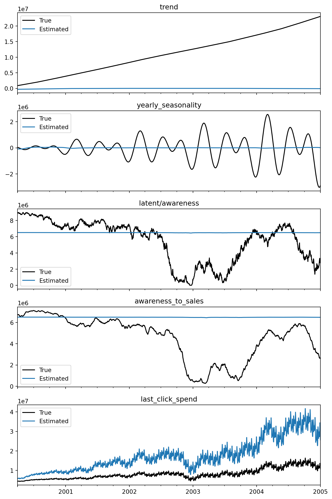
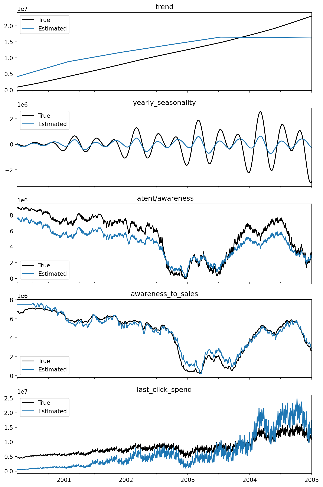

Using proxy variables to model latent effects, such as awareness
What you will learn:
Understand how to model latent variables with Prophetverse
Learn how to use proxy variables to improve model accuracy
Model the last-click effect as proportional to awareness, our latent variable.
Latent variables
Tip
From Prophetverse v0.10.0 onwards, we have included a latent variable feature. You only need to add “latent/” as a prefix to the effect name, and it will not be considered as a final component in the additive decomposition. Instead, it can be used as an input to other effects or linked to proxy variables.
In Marketing Mix Modeling, we often encounter latent variables that are not directly observable but significantly influence sales. A common example is brand awareness. It can befined as :
The ability of a potential buyer to recognize or recall that a brand is a member of a certain product category.
Keller, K. L. (1993). Conceptualizing, Measuring, and Managing Customer-Based Brand Equity.
which is clearly affected by marketing activities, and in turn affects sales. Standard MMM approaches may struggle to accurately capture the impact of such latent variables, leading to biased estimates and suboptimal decision-making.
Since we cannot observe these variables directly, it can be hard to model them. However, we propose in Prophetverse the usage of proxy variables that are correlated with the latent variable of interest to help us infer its true causal effect. For example, we might use survey data on brand recognition or social media engagement metrics as proxies for brand awareness and use it as a soft calibration signal.
The idea is simple, but powerful. More formally, if \(Z(t)\) is a latent variable representing brand awareness at time \(t\), and \(P(t)\) is a proxy variable correlated with \(Z(t)\), we can add a new likelihood term:
\[
P(t) \sim \mathcal{N}(\beta Z(t), \sigma^2)
\]
For a \(\beta\) with user-defined prior, and \(\sigma^2\) representing the uncertainty in the proxy relationship. If there exists a \(\beta\), then the proxy variable provides additional information about the latent variable, helping to better identify its effect on sales.
1. Dataset
1.1. Loading the data
We use a synthetic dataset that simulates a marketing scenario with 2 types of investments:
Investments with impact on brand awareness (e.g., upper-funnel channels like TV, Display, Social Media)
Investments with last-click impact (e.g., Search, Affiliates)
import numpy as npimport matplotlib.pyplot as pltfrom prophetverse.datasets._mmm.dataset2_branding import get_datasety, X, true_effect, true_model = get_dataset()display(X.head())
Since this is a synthetic dataset, we have access to the ground truth of the effects of investments on sales. In a real-world scenario, these would be unknown. Let’s take a look at them:
A common problem in MMM is the correlation of last-click with sales, which can lead to over-attribution of sales to last-click channels if not properly accounted for. We will see later how the proxy variable can help mitigate this.
1.2. Proxy variable
In real-world scenarios, proxy variables can be obtained from various sources, such as:
Branded Search Volume: The volume of searches for the brand name on search engines.
Survey Data: Periodic surveys measuring brand recognition and recall among the target audience.
Social Media Engagement: Metrics such as likes, shares, comments, and mentions related
We simulate a proxy variable correlated with the true latent awareness effect, adding some noise to it.
where \(\text{Baseline}(t)\) includes the latent brand awareness effect, trend, and seasonality components. We basically assume that the last-click effect is stronger when brand awareness is higher, which is a reasonable assumption in many marketing contexts.
2.1. Model without Proxy Variable
We first fit a baseline model without the proxy variable to see how it performs. Since last-click is highly correlated with sales, we will see how it overfits to last-click, leading to poor estimation of other components.
The cell below defines some effects (click to expand):
Code
from prophetverse.effects import ( PiecewiseLinearTrend, LinearFourierSeasonality, ChainedEffects, GeometricAdstockEffect, WeibullAdstockEffect, HillEffect, SumEffects, Forward, Constant, MultiplyEffects,)from prophetverse.sktime import Prophetversefrom prophetverse.engine import MAPInferenceEnginefrom prophetverse.engine.optimizer import LBFGSSolverimport numpyro.distributions as dist# --- Defining seasonality and trend effects ---trend = PiecewiseLinearTrend(changepoint_interval=300)yearly = ("yearly_seasonality", LinearFourierSeasonality( freq="D", sp_list=[365.25], fourier_terms_list=[5], prior_scale=0.1, effect_mode="multiplicative", ),None,)weekly = ("weekly_seasonality", LinearFourierSeasonality( freq="D", sp_list=[7], fourier_terms_list=[3], prior_scale=0.05, effect_mode="multiplicative", ),None,)# --- Defining marketing effects ---# First, we set up a Hill saturation object to be reusedhill = HillEffect( half_max_prior=dist.HalfNormal(1), slope_prior=dist.InverseGamma(2, 1), max_effect_prior=dist.HalfNormal(0.5), effect_mode="additive", input_scale=1e6,)# The effect of ad spend on awareness is modeled with a Hill function# (nonlinear spend response)spend_awareness = ("latent/awareness", hill,"ad_spend_awareness",)# The awareness does not impact sales immediately, but rather has a carryover effect. We model this with a Weibull adstock.awareness_to_sales = ("awareness_to_sales", ChainedEffects( [ ("saturation", Forward("latent/awareness")), ("adstock", WeibullAdstockEffect(max_lag=90)), ] ),None,)# The baseline is finally modeled as the sum of trend, seasonality, and latent awareness (considering adstock)latent_baseline = ("latent/baseline", SumEffects( effects=[ ("trend", Forward("trend")), ("yearly_seasonality", Forward("yearly_seasonality")), ("weekly_seasonality", Forward("weekly_seasonality")), ("awareness", Forward("awareness_to_sales")), ] ),None,)chained_last_click = ("last_click_spend", MultiplyEffects(effects=[("hill", hill), ("baseline", Forward("latent/baseline"))]),"last_click_spend",)
HillEffect(effect_mode='additive',
half_max_prior=<numpyro.distributions.continuous.HalfNormal object at 0x7f5598418cd0 with batch shape () and event shape ()>,
input_scale=1000000.0,
max_effect_prior=<numpyro.distributions.continuous.HalfNormal object at 0x7f5604f4cc90 with batch shape () and event shape ()>,
slope_prior=<numpyro.distributions.continuous.InverseGamma object at 0x7f5598439dd0 with batch shape () and event shape ()>)
MultiplyEffects(effects=[('hill',
HillEffect(effect_mode='additive',
half_max_prior=<numpyro.distributions.continuous.HalfNormal object at 0x7f5598418cd0 with batch shape () and event shape ()>,
input_scale=1000000.0,
max_effect_prior=<numpyro.distributions.continuous.HalfNormal object at 0x7f5604f4cc90 with batch shape () and event shape ()>,
slope_prior=<numpyro.distributions.continuous.InverseGamma object at 0x7f5598439dd0 with batch shape () and event shape ()>)),
('baseline', Forward(effect_name='latent/baseline'))])
HillEffect(effect_mode='additive',
half_max_prior=<numpyro.distributions.continuous.HalfNormal object at 0x7f5598418cd0 with batch shape () and event shape ()>,
input_scale=1000000.0,
max_effect_prior=<numpyro.distributions.continuous.HalfNormal object at 0x7f5604f4cc90 with batch shape () and event shape ()>,
slope_prior=<numpyro.distributions.continuous.InverseGamma object at 0x7f5598439dd0 with batch shape () and event shape ()>)
Since we have access to the ground truth of the components in this synthetic example, we can compare them to see how well the model is capturing the true effects.
fig, axs = plt.subplots(5, 1, figsize=(8, 12), sharex=True)for i, name inenumerate( ["trend","yearly_seasonality","latent/awareness","awareness_to_sales","last_click_spend", ]): true_effect[name].plot(ax=axs[i], label="True", color="black") y_pred_components_baseline[name].plot(ax=axs[i], label="Estimated") axs[i].set_title(name) axs[i].legend()plt.tight_layout()plt.show()

Since the last-click spend is highly correlated with sales, the model tends to over-attribute sales to the last-click effect, leading to poor estimation of other components, especially the latent awareness effect.
2.2. Model with Proxy Variable
We use LinearProxyLikelihood to add the proxy variable to the model. This effect links the latent awareness variable to the observed proxy variable, helping to better identify the latent effect.
Since we know that the correlation is positive, we use a HalfNormal prior for the coefficient.
HillEffect(effect_mode='additive',
half_max_prior=<numpyro.distributions.continuous.HalfNormal object at 0x7f5598418cd0 with batch shape () and event shape ()>,
input_scale=1000000.0,
max_effect_prior=<numpyro.distributions.continuous.HalfNormal object at 0x7f5604f4cc90 with batch shape () and event shape ()>,
slope_prior=<numpyro.distributions.continuous.InverseGamma object at 0x7f5598439dd0 with batch shape () and event shape ()>)
MultiplyEffects(effects=[('hill',
HillEffect(effect_mode='additive',
half_max_prior=<numpyro.distributions.continuous.HalfNormal object at 0x7f5598418cd0 with batch shape () and event shape ()>,
input_scale=1000000.0,
max_effect_prior=<numpyro.distributions.continuous.HalfNormal object at 0x7f5604f4cc90 with batch shape () and event shape ()>,
slope_prior=<numpyro.distributions.continuous.InverseGamma object at 0x7f5598439dd0 with batch shape () and event shape ()>)),
('baseline', Forward(effect_name='latent/baseline'))])
HillEffect(effect_mode='additive',
half_max_prior=<numpyro.distributions.continuous.HalfNormal object at 0x7f5598418cd0 with batch shape () and event shape ()>,
input_scale=1000000.0,
max_effect_prior=<numpyro.distributions.continuous.HalfNormal object at 0x7f5604f4cc90 with batch shape () and event shape ()>,
slope_prior=<numpyro.distributions.continuous.InverseGamma object at 0x7f5598439dd0 with batch shape () and event shape ()>)
In a real use-casee, you would not have access to the ground truth of the components. We use them here to show how the model behaves, and how incorporing extra information can improve it.
fig, axs = plt.subplots(5, 1, figsize=(8, 12), sharex=True)for i, name inenumerate( ["trend","yearly_seasonality","latent/awareness","awareness_to_sales","last_click_spend", ]): true_effect[name].plot(ax=axs[i], label="True", color="black") y_pred_components[name].plot(ax=axs[i], label="Estimated") axs[i].set_title(name) axs[i].legend()plt.tight_layout()plt.show()

3. Comparing models
Here, we do our final comparison of the models, looking at the counterfactual impact of zeroing out the awareness ad spend. This shows how important it is to include the proxy variable to correctly attribute the impact of awareness spend.
We see that, although not perfect, the model with the proxy variable is able to much better capture the true impact of awareness spend on sales, while the baseline model without the proxy variable fails to do so.
How to cite this package
If you use Prophetverse or any of this idea in your package/paper, please cite this package according to DOI on Readme.